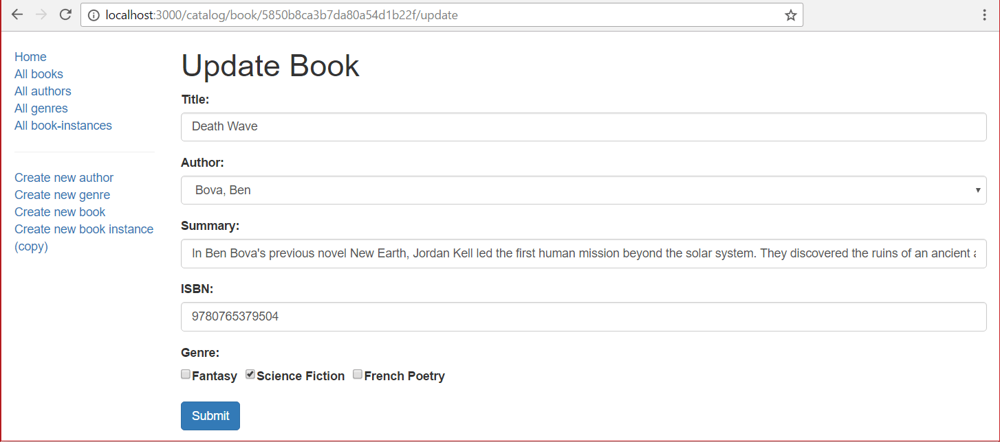

This final subarticle shows how to define a page to update Book objects. Form handling when updating a book is much like that for creating a book, except that you must populate the form in the GET route with values from the database.
Open /controllers/bookController.js. Find the exported book_update_get() controller method and replace it with the following code.
// Display book update form on GET.
exports.book_update_get = function(req, res, next) {
// Get book, authors and genres for form.
async.parallel({
book: function(callback) {
Book.findById(req.params.id).populate('author').populate('genre').exec(callback);
},
authors: function(callback) {
Author.find(callback);
},
genres: function(callback) {
Genre.find(callback);
},
}, function(err, results) {
if (err) { return next(err); }
if (results.book==null) { // No results.
var err = new Error('Book not found');
err.status = 404;
return next(err);
}
// Success.
// Mark our selected genres as checked.
for (var all_g_iter = 0; all_g_iter < results.genres.length; all_g_iter++) {
for (var book_g_iter = 0; book_g_iter < results.book.genre.length; book_g_iter++) {
if (results.genres[all_g_iter]._id.toString()===results.book.genre[book_g_iter]._id.toString()) {
results.genres[all_g_iter].checked='true';
}
}
}
res.render('book_form', { title: 'Update Book', authors: results.authors, genres: results.genres, book: results.book });
});
};The controller gets the id of the Book to be updated from the URL parameter (req.params.id). It uses the async.parallel() method to get the specified Book record (populating its genre and author fields) and lists of all the Author and Genre objects.
When the operations complete it checks for any errors in the find operation, and also whether any books were found.
Note: Not finding any book results is not an error for a search — but it is for this application because we know there must be a matching book record! The code above compares for (
results==null) in the callback, but it could equally well have daisy chained the method orFail() to the query.
We then mark the currently selected genres as checked and then render the book_form.pug view, passing variables for title, book, all authors, and all genres.
Find the exported book_update_post() controller method, and replace it with the following code.
// Handle book update on POST.
exports.book_update_post = [
// Convert the genre to an array
(req, res, next) => {
if(!(req.body.genre instanceof Array)){
if(typeof req.body.genre==='undefined')
req.body.genre=[];
else
req.body.genre=new Array(req.body.genre);
}
next();
},
// Validate and sanitise fields.
body('title', 'Title must not be empty.').trim().isLength({ min: 1 }).escape(),
body('author', 'Author must not be empty.').trim().isLength({ min: 1 }).escape(),
body('summary', 'Summary must not be empty.').trim().isLength({ min: 1 }).escape(),
body('isbn', 'ISBN must not be empty').trim().isLength({ min: 1 }).escape(),
body('genre.*').escape(),
// Process request after validation and sanitization.
(req, res, next) => {
// Extract the validation errors from a request.
const errors = validationResult(req);
// Create a Book object with escaped/trimmed data and old id.
var book = new Book(
{ title: req.body.title,
author: req.body.author,
summary: req.body.summary,
isbn: req.body.isbn,
genre: (typeof req.body.genre==='undefined') ? [] : req.body.genre,
_id:req.params.id //This is required, or a new ID will be assigned!
});
if (!errors.isEmpty()) {
// There are errors. Render form again with sanitized values/error messages.
// Get all authors and genres for form.
async.parallel({
authors: function(callback) {
Author.find(callback);
},
genres: function(callback) {
Genre.find(callback);
},
}, function(err, results) {
if (err) { return next(err); }
// Mark our selected genres as checked.
for (let i = 0; i < results.genres.length; i++) {
if (book.genre.indexOf(results.genres[i]._id) > -1) {
results.genres[i].checked='true';
}
}
res.render('book_form', { title: 'Update Book',authors: results.authors, genres: results.genres, book: book, errors: errors.array() });
});
return;
}
else {
// Data from form is valid. Update the record.
Book.findByIdAndUpdate(req.params.id, book, {}, function (err,thebook) {
if (err) { return next(err); }
// Successful - redirect to book detail page.
res.redirect(thebook.url);
});
}
}
];This is very similar to the post route used when creating a Book. First we validate and sanitize the book data from the form and use it to create a new Book object (setting its _id value to the id of the object to update). If there are errors when we validate the data then we re-render the form, additionally displaying the data entered by the user, the errors, and lists of genres and authors. If there are no errors then we call Book.findByIdAndUpdate() to update the Book document, and then redirect to its detail page.
Open /views/book_form.pug and update the section where the author form control is set to have the conditional code shown below.
div.form-group
label(for='author') Author:
select#author.form-control(type='select' placeholder='Select author' name='author' required='true' )
- authors.sort(function(a, b) {let textA = a.family_name.toUpperCase(); let textB = b.family_name.toUpperCase(); return (textA < textB) ? -1 : (textA > textB) ? 1 : 0;});
for author in authors
if book
//- Handle GET form, where book.author is an object, and POST form, where it is a string.
option(
value=author._id
selected=(
author._id.toString()==book.author._id
|| author._id.toString()==book.author
) ? 'selected' : false
) #{author.name}
else
option(value=author._id) #{author.name}Note: This code change is required so that the book_form can be used for both creating and updating book objects (without this, there is an error on the
GETroute when creating a form).
Open the book_detail.pug view and make sure there are links for both deleting and updating books at the bottom of the page, as shown below.
hr
p
a(href=book.url+'/delete') Delete Book
p
a(href=book.url+'/update') Update BookYou should now be able to update books from the Book detail page.
Run the application, open your browser to http://localhost:3000/, select the All books link, then select a particular book. Finally select the Update Book link.
The form should look just like the Create book page, only with a title of ‘Update book’, and pre-populated with record values.

Note: The other pages for updating objects can be implemented in much the same way. We’ve left that as a challenge.